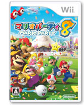
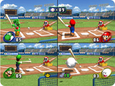

|  |  |
 |
![プロデューサー[池田 淳さん]](../p1/img/hudson_photo1.jpg)
![シニアディレクター[菊池賢次さん]](../p1/img/hudson_photo2.jpg)
![ディレクター[西谷衆一郎さん]](img/hudson_photo3.jpg)
![企画[渡辺達光さん]](img/hudson_photo4.jpg)
![グラフィック[筒井佐緒理さん]](img/hudson_photo5.jpg)
![アソシエイトプロデューサー[廣瀬美由貴]](img/nintendo_photo2.jpg)
| ミニゲームはどのくらい思いついて、どのくらいが残っていくのでしょうか？ |
| 西谷： | アイデアといっても最初の段階の１行メモレベルから数えると400ぐらいは出てきますね。収録するミニゲームの総数に関しては任天堂さんと相談しながら、といった感じでしょうか。 |
| 前にも開発スタッフインタビューで同じ質問をさせてもらったことがある気がするのですが、ミニゲームのアイデアを思いつく瞬間って、どんなときなのでしょうか？ |
| 西谷： | 今回はいままでと別のアプローチで、日常生活の動きをＷｉｉリモコンでできないかなと探していました。例えば「ハサミでチョッキン」とかそうですね。 |
| 渡辺： |  「なげなわバトル」 |
それとは逆のパターンでＷｉｉリモコンをとにかくいじって、どうやって動かしたら面白いか、じゃあ、その動きは実際の何に似ているかと考えていくこともありました。「なげなわバトル」などはＷｉｉリモコンからのアプローチといえます。 |
| 西谷： | 操作が大きく変わりましたが、シリーズを通じて守り続けている決まりごとは変えていないんですよ。だから前作を遊んでもらったユーザーさんにも違和感なく楽しんでもらえていると思います。 |
| 佐藤： |  でも、いまＷｉｉリモコンで面白いミニゲームを思いついた話ばかりあがっていますけど、じつはＷｉｉリモコンにも罠があったんです。『マリオパーティＤＳ』で１つ乗り越えてきたみたいに、『マリオパーティ８』も１つ乗り越えてきた転換点がありました。 でも、いまＷｉｉリモコンで面白いミニゲームを思いついた話ばかりあがっていますけど、じつはＷｉｉリモコンにも罠があったんです。『マリオパーティＤＳ』で１つ乗り越えてきたみたいに、『マリオパーティ８』も１つ乗り越えてきた転換点がありました。Ｗｉｉリモコンを生かしたミニゲームばかり採用することで、いろいろな特徴を持ったミニゲームをそろえることができたんですけど、そういったミニゲームばかり集めただけではソフト全体として面白くはなかったんですよ。 |
| 菊池： | そうでしたね。最初はＷｉｉリモコンにばかり目が行ってしまって。 |
| 佐藤： | その理由は１人でＷｉｉリモコンを操作していると他人との絡み合いが減ってしまうためです。 『マリオパーティＤＳ』と同じようなことが起こったんですね。やはりバリエーションで面白がらせることが大切で、絡み合いとか、運とか、そういうのもいっぱいあるのが「マリオパーティ」なんですね。 |
| ステージデザインで今回こだわっているところは？ |
| 渡辺： |  「オーシャンロード」 |
ステージは毎回いろいろと冒険させてもらっています。今回の『マリオパーティ８』では「ジャングルパーク」などは高さを取り入れたり、「オーシャンロード」は一直線の遠くまで見渡せたり、「ミステリーハウス」はイベントのランダム要素を増やすなど、いままでないようなステージを作ってみました。 |
| 筒井： | デザイン面に関してもゲームキューブからＷｉｉに移行したのをキッカケに、いままで可愛らしいイメージでいっていたのをリアルテイストへ変更しています。 |
| 廣瀬： | 従来のおもちゃっぽい表現に偏りすぎると子供っぽさが出てしまうので、幅広い年齢の方に遊んでいただくにはリアル路線にした方がいいと提案させてもらったんです。 |
| 筒井： | リアルテイストといってもいろいろとあるんですけど、今回は私が勝手に“マリパリアル”と呼んでいるものです。「マリオパーティ」らしいリアルさって何だろうというところを突き詰めました。従来はマンガ的な表現が多かったんですけど、ステージでいえば水や光源の表現であったりとか、新しい「マリオパーティ」をビジュアルからもアプローチしたいと思って挑戦しています。 |
| それはボードに限らず、ミニゲームのデザインに関してもですか。 |
| 廣瀬： | そうですね。全体的にリアル路線で。動きとかは相変わらずコミカルなんですけど、デザインはリアルというテイストです。 |
| 筒井： |  いつもハドソン側から提案させてもらってもNGと言われることはほとんどないんですね。逆にマリオキャラクターを生き生きと動かさなくてはと苦労しています。それは設定に関しても同様で、特定のミニゲームでジャマする敵キャラがヘイホーなのかワンワンなのか、ということも私たちですごく検討しています。 いつもハドソン側から提案させてもらってもNGと言われることはほとんどないんですね。逆にマリオキャラクターを生き生きと動かさなくてはと苦労しています。それは設定に関しても同様で、特定のミニゲームでジャマする敵キャラがヘイホーなのかワンワンなのか、ということも私たちですごく検討しています。 |
| 西谷： | だいたい「マリオパーティ」は毎回新キャラを増やしているんですけど、『マリオパーティ８』ではハンマーブロスとゲッソーが登場しています。 で、ゲッソーをプレイヤーキャラにしていいものかと心配はしていたんですけど（笑）、快諾をいただいて、こちらの気持ちというか意図は非常にくんでもらっている状態ですね。 |
| 廣瀬： |  実際にできあがったものを見たら、とても可愛かったんです。知り合いにもゲッソーをマイキャラにしている人がいますよ。 実際にできあがったものを見たら、とても可愛かったんです。知り合いにもゲッソーをマイキャラにしている人がいますよ。 |
| 生田： | マリオたちはミニゲームでいろいろなアクションをするのですが、グラフィックの担当者が細かくチェックしています。一番大切なのは自然な動きをしているかどうかです。その辺はハドソンさんにご苦労をかけている部分だと思います。 |